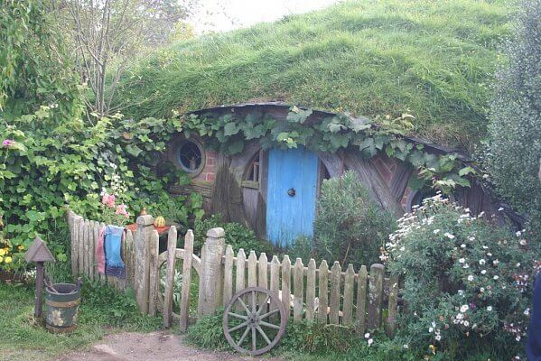
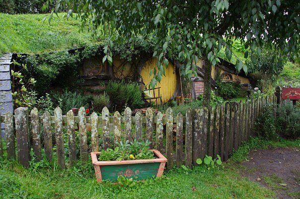
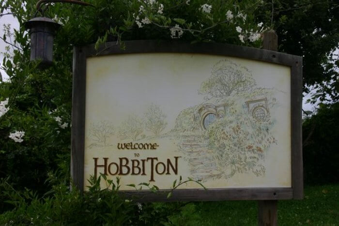
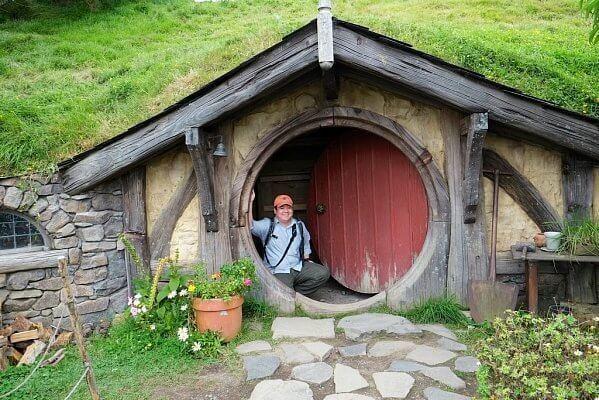
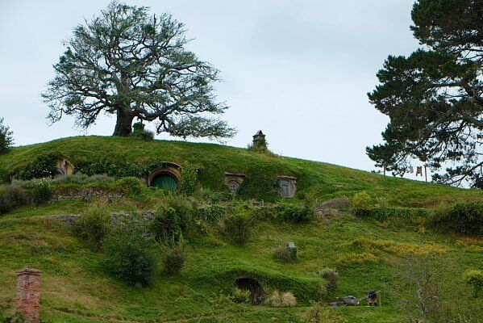
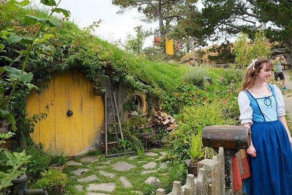
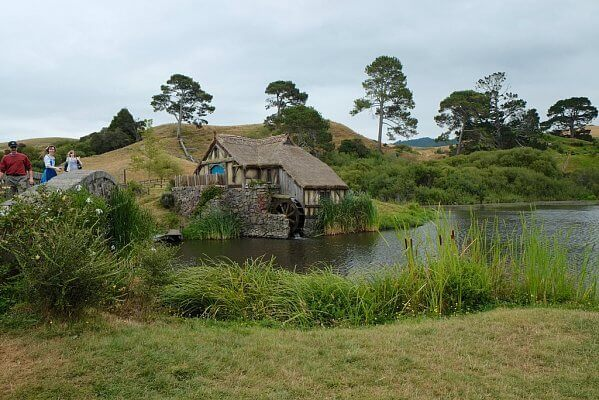
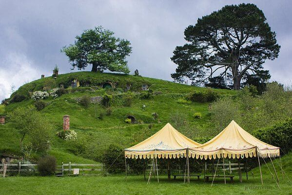

Земли Новой Зеландии у многих ещё и ассоциируются с произведениями писателя Дж. Толкиена. Поклонники знаменитых кинотрилогий «Властелин Колец» и «Хоббит» наверняка знают, что посетить в Новой Зеландии. Это Хоббитон — это искусственно созданная деревушка, ставшая в кинокартинах местом обитания выдуманного народа. Главная её особенность в том, что она создана не как временная декорация из фанеры и картона, а отстроена как реальное поселение. Подумать только, сколько сил было вложено в создание этого сказочного уголка: мастерски выполненные домики, ухоженные огороды, благоухающие сады радуют глаз посетителей, позволяя окунуться в узнаваемую атмосферу любимых фэнтези.

Как-то утром в 1998 году на пороге семьи Александер появился неизвестный мужчина и спросил, не хотят ли они разделить с ним приключение. Незнакомцу нужно было место, где было как можно меньше шума и как можно больше зелени, а также место, где люди живут тихой, мирной жизнью, как в Шире из книги.
В отличие от хоббита из книги (а впоследствии и из фильма), семья Александеров и не догадывалась, что к ним на крыльцо пришел волшебник. Тем не менее, они сказали: «Доброе утро!» мужчине и пригласили его на чашку чая.

Незнакомец рассказал Александерам о своей идее и предупредил, что процесс её реализации будет захватывающим, но трудным и долгим, а жизнь фермеров больше никогда не будет прежней. Некоторое время фермеры колебались, да кто бы не сделал этого на их месте. Но в конце концов, они сказали «да» этому волшебнику по имени Питер Джексон и так началось длинное, но захватывающее приключение в шести частях (в течение следующих 14 лет было снято 6 фильмов (трилогия «Властелина колец» и трилогия «Хоббита»).
Режиссер впоследствии рассказал, что он заметил красивую сельскую местность, где располагалась ферма, во время полетов над Новой Зеландией (он пытался с борта самолета найти наиболее подходящие места для съемок). Джексону уже дали зеленый свет на съемки, сценарий был более или менее готов, и осталось только найти место, где режиссер смог бы воплотить Средиземье и его персонажей. Эти великолепные сельскохозяйственные угодья в сельской местности были просто идеальны для Шира и Хоббитона. В округе не было ни единого высотного здания, не было дорог, линий электропередач... просто сплошные зеленые луга, травянистые холмы, большие деревья и небольшое озеро.

С разрешения владельцев фермы Джексон со своей командой превратил это место в деревню самого маленького народца в Средиземье. Даже армия Новой Зеландии помогала съемочной группе и строила дорогу, ведущую к съемочной площадке. В то время на дороге можно было увидеть всевозможную тяжелую технику - грузовики, бульдозеры, экскаваторы, буквально все, что можно себе представить. Но режиссер, обожающий свою родину, обеспечил, чтобы природа сохранилась в первозданном виде. К примеру большое дерево, которое должно было стать в фильмах Деревом собраний Бэг Энда, аккуратно выкопали и пересадили. Это было тяжело, но усилия окупили себя.
Примерно за 8 месяцев съемочной группе удалось превратить красивый ландшафт сельской местности в Шир. Это была деревня хоббитов, которая осталась Александерам после окончания съемок трилогии «Властелин колец» в декабре 2000 года. К счастью для всех, фермеры решили сохранить очаровательный реквизит и более того, разрешили посещать его туристам.

Но все было не так радужно с самого начала. На ферме площадью 500 гектаров каждый день трудились в поте лица днем и ночью до 400 актеров и членов съемочной группы... Причем не стоит забывать, что все годы съемок Рассел Александер и его семья по сути жили среди этой сплошной суматохи, чуть ли не на съемочной площадке. Не зря Питер Джексон сказал с самого начала, что для фермеров все изменится навсегда, а прежняя жизнь больше не вернется. После съемок «Властелина колец» прежнюю усадьбу Александеров было не узнать. Тем более, декорации делали в основном из временных материалов, таких как 7мм слой пенополистирола, и они быстро разрушались.
Казалось бы, съемки закончились, и теперь Александерам можно жить в спокойствии дальше. Но не тут то было. Когда-то никому не известное тихое семейное поместье привлекло большое внимание с самого начала съемок. Туристы со всего мира начали стекаться в Хоббитон. Естественно, первые туры в 2002 году были большей частью информационными, но туристов приезжало все больше...

Затем, в 2011 году, Джексон предложил семье Александеров очередное приключение, и Хоббитон начали отстраивать заново для съемок трилогии «Хоббит». На этот раз домики хоббитов и прочие декорации делали более прочными. После окончания съемок уже весь мир знал ферму, как Хоббитон, и она стала одной из самых посещаемых туристических достопримечательностей в стране.
Вот так простой стук в дверь может изменить жизнь людей, желающих принять участие в приключении. Также дружелюбность семьи, которая сказала «Доброе утро» незнакомцу и пригласила его на чашку чая, привела к тому, что у миллионов людей по всему миру появилась возможность полюбоваться сказочными прекрасными пейзажами. И не только на экране — за последние два десятилетия Хоббитон на ферме Александеров посетило более 800 000 людей.



ВВЕРХ